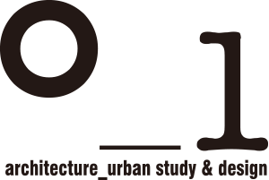

Minsung Son is an Architecture B.A. candidate at the University of Cambridge. He is also an independent photographer, videographer, and journalist. His projects have won awards from organisations including The New York Times and the Jeju Olle Foundation, and featured in publications such as Varsity and The Tab Cambridge.
Minsung's architectural interests span across practice and theory. As a designer, he focuses on forging loose communities through shared and mediatory spaces as well as through participatory design processes. In architectural theory, he is fascinated by the symbolic and practical roles of modernist architecture in 20th century's newly independent nations seeking a forward-looking national identity, and further, the global variations of modernist architecture as a response to local contexts and socioeconomic limitations.
Based in Seoul, Korea, and Cambridge, U.K.
minsungson.mono@gmail.com
| Education | Date | Info |
|---|---|---|
|
University of Cambridge |
'20.10 - '25.06 | Architecture B.A. |
| Work Experience | Date | Role |
| '23.07 - '23.09 | Research Assistant | |
|

|
'22.06 - '22.07 | Intern |
| '19.07 - '19.08 | Intern |